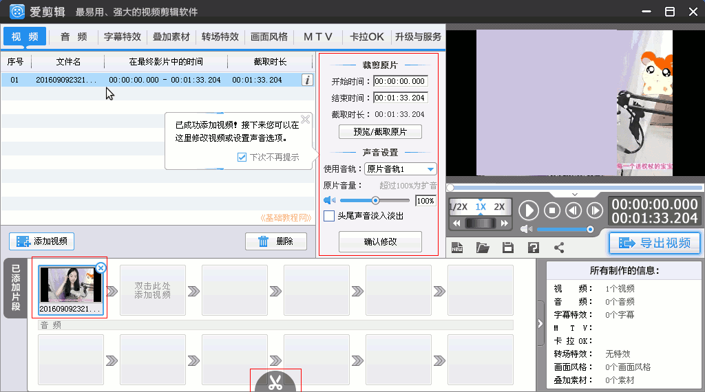

视频编辑 基础入门教程
十一、爱剪辑视频编辑器 返回目录
使用爱剪辑可以将视频进行剪切、转换、连接，添加字幕效果等，下面我们来看一个练习，
1、下载和安装
1）在百度中搜索“爱剪辑”，在出来的页面中点击进入下载页面，文件大约有283M左右，双击安装即可；
2）播放一下要处理的视频，点菜单“文件－属性”，查看一下视频的宽度和高度，帧频、压缩比特率等；
3）运行安装完成后，点击运行，出来一个新建对话框，输入片、名制作者，选取视频大小没有就点自定义手动输入；
4）在出来的窗口左边，点列表框左下角的“添加视频”，选择要转换的视频文件，本课有一个范例(下载)；
5）在出来的视频预览面板中，点确定直接添加，也可以点播放，然后进行裁切；
6）添加的视频在左下角，下边的剪刀可以把右边播放/暂停的视频剪辑成一段一段；

7）继续添加视频放在第二个方框中，这样导出的时候就可以连接两段视频；
8）选择上边的音频标签，再点下边的添加音频，添加背景音乐；
9）出来的音频框直接点确定，也可以下边点截取，在右上边选择音频放置的位置；
10）在窗口中间可以编辑截取音乐或者视频，在出来的对话框点截取框中的小闹钟，可以设置当前时间点；
11）设置好视频和音乐以后，点右边中间的“导出视频”按钮，导出做好的视频；
12）在出来的对话框中，检查各项文本、视频大小和压缩比率；
13）点下边导出路径右边的“浏览”按钮，选择导出视频存放的文件夹，输入保存的文件名；
14）点“导出”按钮，出来导出进度对话框，正在导出视频；
15）导出完成后，在显示的对话框中，可以打开视频存放的文件夹；
本教程由86团学校TeliuTe制作|著作权所有
基础教程网：http://teliute.org/
美丽的校园……
|
|
|
|
|
|
转载和引用本站内容，请保留作者和本站链接。